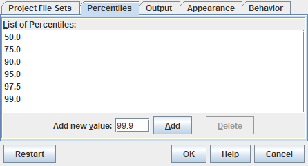

| Prev - Next - Down | SDMetrics - the UML design measurement tool |

Figure 27: Percentiles Tab Sheet
The tab sheet shows the current list of percentiles. To add a percentile, type the percentile in the text field labeled "Add new value", and press the enter (or return) key, or click the "Add" button. The percentiles you enter must be valid floating-point numbers between 0 and 100. Always use a dot as the decimal point.
To delete percentiles, select the percentiles to delete on the list. You can select multiple percentiles by holding down the shift or control key on the keyboard while selecting list elements. Click the delete button to remove the selected percentiles from the list.
Note: the new percentiles settings become effective when the next set of metrics is calculated.
| Prev | Up | Next |
| Section 4.16.1.4 "The Default Project File Sets" | Contents | Section 4.16.3 "Output" |